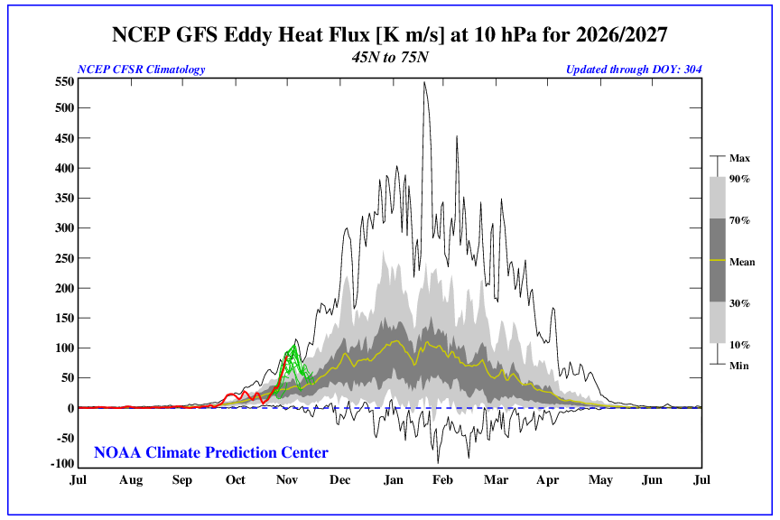
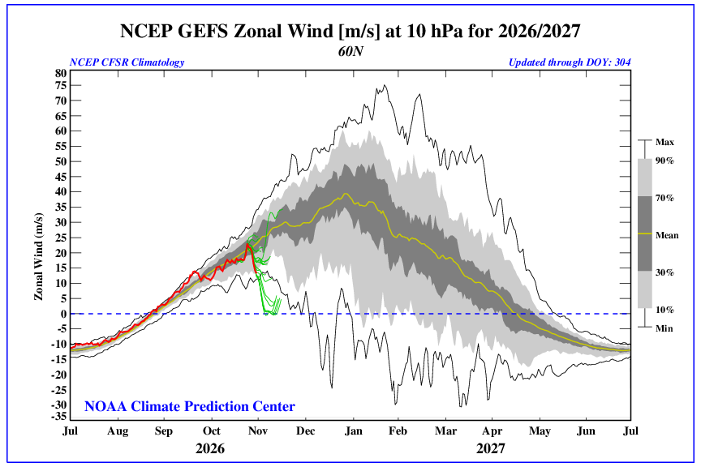
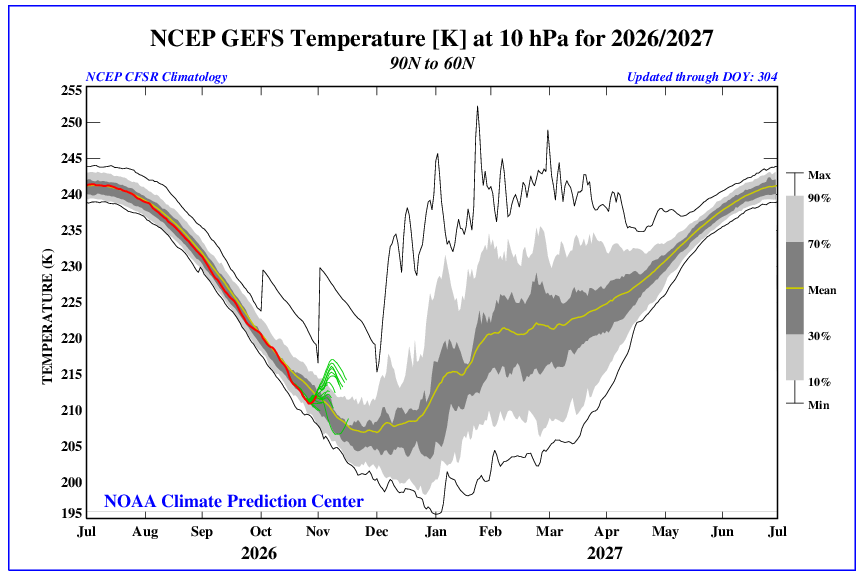
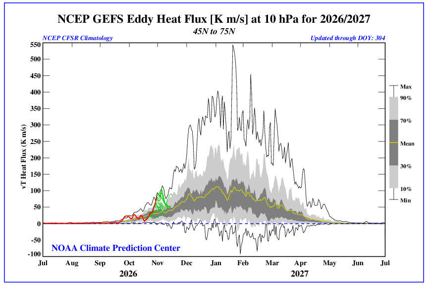
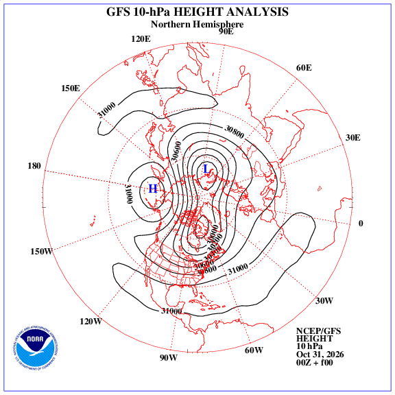
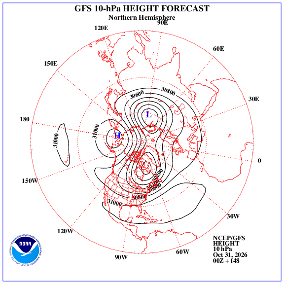
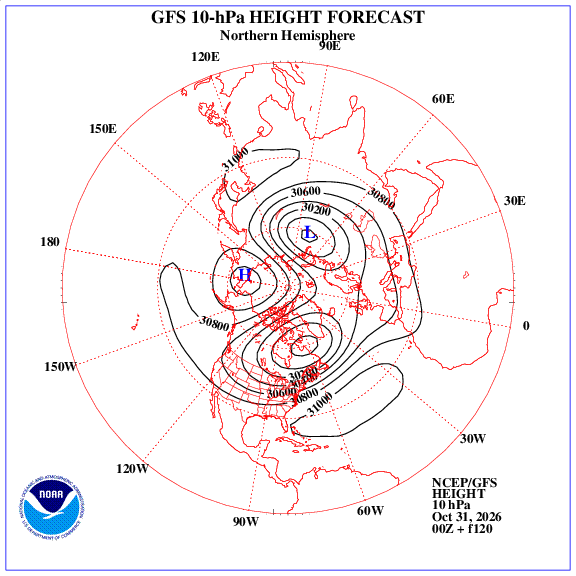
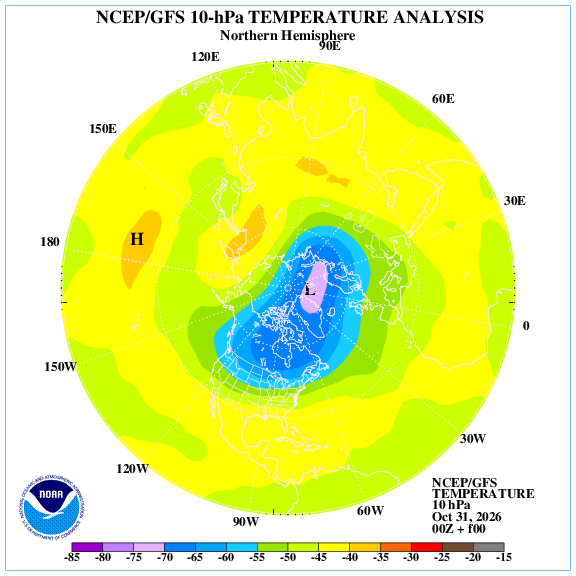

The vortex is near its climatological strength - no strong signal either way for cold-air delivery.
AO now+0.85
7-day mean+0.92
30-day mean+1.22
GEFS 14-day mean-0.41
Season 2026-27 to date: mean +1.27 over 29 days (since 2026-10-01). Negative days (AO at or below -1) in the last 90: 1; strongly negative days (-2 or below): 0. Trending ▼ -0.82 versus the previous week.
The 31-member GEFS ensemble takes the AO to a mean of -0.09 across the next week and -0.41 across the next 14 days (final-day 10th-90th percentile -2.8 to +0.8) - leaning toward little net change. Ensemble spread is the honest uncertainty here: a widening fan means the forecast is not settled, and the AO is one of the harder indices to take literally beyond a week.
Lead
Valid
Ensemble mean
10-90%
Today
2026-10-31
+0.96
+0.9 to +1.0
Day +2
2026-11-02
-0.29
-0.5 to -0.1
Day +6
2026-11-06
-0.62
-1.3 to -0.2
Day +9
2026-11-09
-0.74
-1.6 to +0.1
Day +13
2026-11-13
-1.03
-3.2 to +0.5
AO is the surface expression of the same hemispheric pressure pattern the stratospheric vortex rides on. It is not the vortex itself - the 10 hPa panels below show the vortex directly. Use them together.
📉 Arctic Oscillation - last 140 days + 16-day GEFS forecast
White line: observed daily AO from 2026-06-12 to 2026-10-29. Blue shading = negative phase (weak/perturbed vortex), red = positive (strong/locked vortex). The dashed yellow line is the 31-member GEFS ensemble mean from its 2026-10-31 run; the pale band is the 10th-90th percentile spread. Hover any mark for the exact value.
🛰️ The vortex itself - CPC stratosphere monitoring (2026-2027 season)
10 hPa is roughly 100,000 ft up, the level where sudden stratospheric warmings are defined. These are observations, not a model: the current vortex strength, temperature, and wave driving. Click any image to enlarge it.
10 hPa zonal wind at 60°N - observed - The vortex strength itself: the average west-to-east wind around the 60°N circle at 16 miles up. Strongly positive and steady = a tight, undisturbed vortex. A sustained drop toward zero - or a reversal to easterly - is the signature of a sudden stratospheric warming.10 hPa temperature, 60-90°N - observed - Polar-cap temperature: how cold the air inside the vortex is. A jump of 25-30°F in a few days is the warming in "sudden stratospheric warming".

10 hPa eddy heat flux, 45-75°N - observed - Wave driving - how hard the troposphere's storm track is pushing energy upward. Spikes here usually come first; the vortex weakens a few days to a week later.
🔮 16-day stratospheric outlook - GEFS ensemble

10 hPa zonal wind at 60°N - GEFS 16-day forecast - Where the ensemble takes the vortex strength from here. Forecasters watch for the ensemble mean bending toward zero.

10 hPa temperature, 60-90°N - GEFS 16-day forecast - The forecast polar-cap temperature. A forecast climb toward the climatological (black) line is a warming event in the making.

10 hPa eddy heat flux, 45-75°N - GEFS 16-day forecast - Forecast wave driving: the model's own view of whether the vortex is about to get hit.
The same three diagnostics as a 16-day forecast. A forecast 10 hPa wind drop toward zero, a polar-cap temperature climb, and a heat-flux spike appearing together is the classic sudden-stratospheric-warming recipe - and even then, the surface response usually lags by 1-3 weeks.
🗺️ 10 hPa height & temperature - GFS analysis and forecast
The shape of the vortex, not just its strength. A tight, circular ring over the pole is a healthy vortex; a stretched oval, a split into two lobes, or a center displaced toward Eurasia or Canada is a disturbed one. The forecast panels show where the models take that shape - click any map to enlarge it.

10 hPa height - GFS analysis

10 hPa height - +48 h forecast

10 hPa height - +120 h forecast

10 hPa temperature - GFS analysis
❄️ The last 20 winters - DJF Arctic Oscillation
Winter
DJF mean
Phase
Daily range
Data
2025-26
-0.97
negative
-4.9 to +2.9
90 days
2024-25
-0.39
neutral
-5.3 to +3.4
90 days
2023-24
+0.05
neutral
-3.0 to +3.5
91 days
2022-23
-0.65
negative
-4.2 to +3.2
90 days
2021-22
+0.81
positive
-2.4 to +3.1
90 days
2020-21
-1.76
negative
-5.3 to +2.7
90 days
2019-20
+1.96
positive
-2.8 to +6.1
91 days
2018-19
+0.14
neutral
-3.3 to +3.4
90 days
2017-18
-0.08
neutral
-3.6 to +2.6
90 days
2016-17
+1.01
positive
-2.2 to +4.7
90 days
2015-16
-0.01
neutral
-4.9 to +4.5
91 days
2014-15
+0.81
positive
-1.5 to +3.5
90 days
2013-14
+0.18
neutral
-2.6 to +4.3
90 days
2012-13
-1.13
negative
-3.9 to +1.8
90 days
2011-12
+0.66
positive
-3.5 to +4.3
91 days
2010-11
-0.96
negative
-5.3 to +3.9
90 days
2009-10
-3.27
negative
-5.8 to +0.5
90 days
2008-09
+0.28
neutral
-3.2 to +3.3
90 days
2007-08
+0.83
positive
-2.5 to +4.6
91 days
2006-07
+1.04
positive
-2.2 to +4.0
90 days
Dec-Feb mean of CPC's daily AO index, computed from the same 1950-present record as the chart. Phase tags: + beyond +0.5, - beyond -0.5, ~ neutral in between. A single season can still swing hard: the DJF mean hides cold outbreaks and mild spells in the same winter.
❄️ Negative-AO winters vs what Tennessee actually got
Every winter with a DJF AO mean at or below -0.5, paired with Tennessee's temperature and snowfall for the same December-February. The state value is the mean of three station records - Memphis, Nashville and Knoxville - and the 1991-2020 normals are computed from those same records, so the comparison can never drift from the history it describes. The right-hand columns repeat the snow-vs-normal test for each grand division separately, so a weak vortex that buried the west but missed the east does not average out into a misleading statewide number. n/a means that winter's station records were too incomplete to trust.
Negative-AO winters31
Colder than normal25 of 31 (80%)
Snowier than normal25 of 31 (80%)
Average outcome-2.4 °F · 8.5 in snow
Winter
DJF AO
TN temp vs normal
TN snowfall
Snow vs normal
West
Middle
East
2025-26
-0.97
+0.5 °F
2.8 in
86% of normal
163%
37%
101%
2022-23
-0.65
+4.5 °F
1.2 in
36% of normal
32%
31%
47%
2020-21
-1.76
-1.3 °F
6.7 in
207% of normal
466%
136%
136%
2012-13
-1.13
+2.4 °F
1.5 in
46% of normal
41%
26%
77%
2010-11
-0.96
-3.3 °F
11.5 in
355% of normal
439%
327%
365%
2009-10
-3.27
-5.6 °F
6.3 in
195% of normal
308%
186%
151%
2005-06
-0.80
+0.1 °F
2.5 in
78% of normal
145%
45%
80%
2003-04
-0.94
-1.9 °F
0.8 in
23% of normal
9%
34%
n/a
2002-03
-0.65
-3.5 °F
9.1 in
281% of normal
140%
395%
n/a
2000-01
-1.29
-4.4 °F
3.2 in
99% of normal
104%
107%
n/a
1997-98
-0.77
+1.4 °F
3.5 in
109% of normal
136%
99%
113%
1995-96
-1.04
-2.8 °F
7.5 in
231% of normal
27%
377%
n/a
1986-87
-0.80
-1.8 °F
3.4 in
105% of normal
0%
71%
223%
1985-86
-1.71
-3.0 °F
4.7 in
144% of normal
90%
79%
267%
1984-85
-1.22
-2.9 °F
20.6 in
636% of normal
937%
487%
668%
1979-80
-0.54
-1.7 °F
7.1 in
218% of normal
127%
181%
341%
1978-79
-1.28
-5.5 °F
20.1 in
621% of normal
471%
704%
685%
1977-78
-1.10
-7.8 °F
15.9 in
491% of normal
339%
597%
516%
1976-77
-2.54
-6.4 °F
11.4 in
353% of normal
172%
531%
303%
1969-70
-1.82
-5.5 °F
14.0 in
433% of normal
163%
317%
783%
Most recent 20 of 31 negative-AO winters shown. Snowfall "normal" is the mean DJF total at those stations, so a normal winter is roughly 3.2 in - small numbers, and one big storm can double a season. Hover a division column for that winter's inches.
Grand division
Snowier than normal
Avg snow
Avg snow vs normal
Avg temp vs normal
WestMemphis, normal 2.2 in
22 of 31
5.0 in
225% of normal
-2.4 °F
MiddleNashville, normal 3.8 in
22 of 31
10.0 in
262% of normal
-2.6 °F
EastKnoxville, normal 3.4 in
24 of 27
11.2 in
333% of normal
-2.2 °F
Same 31 negative-AO winters, split by grand division. Each division is a single long-record station, not a gridded regional mean - Memphis (west), Nashville (middle), Knoxville (east) - so the snow numbers are small and one storm can swing a season. The split matters most in a winter like 2020-21: west Tennessee ran 466% of its normal while the east came in at 136%.
For contrast: the 17 positive-AO winters (DJF mean at or above +0.5) averaged +1.1 °F in Tennessee and 2.5 in of snow (78% of normal), with 5 of 17 snowier than normal. That gap between the two groups is the whole point of the index - and it is a shift in odds, not a guarantee.
NOAA ACIS daily station records (Memphis, Nashville, Knoxville) - winter temperature and snowfall, with 1991-2020 normals derived from the same records
🔎 Analog winters - who this winter looks like so far
The six past winters closest to this one in both indices at once - Arctic Oscillation and ENSO, each measured in its own standard deviation so neither index wins on scale alone - with what Tennessee recorded in each. This winter is matched on what is known so far: the season-to-date AO and the latest published three-month ONI.
This winter's AO+1.27
2026-27, 29 days - an unusually strong, locked vortex so far
This winter's ENSO+2.16
JAS 2026 - El Nino
Analogs averaged+1.0 °F
Analogs averaged4.3 in snow
Colder / snowier1 and 4 of 6
Winter
DJF AO
DJF ONI
TN temp vs normal
TN snowfall
Vs normal
1972-73
+1.06
+1.55
-2.1 °F
5.3 in
163%
1991-92
+1.06
+1.54
+1.9 °F
0.0 in
0%
1982-83
+0.23
+2.14
+1.0 °F
5.4 in
168%
2023-24
+0.05
+1.84
+2.1 °F
6.5 in
201%
2015-16
-0.01
+2.50
+3.1 °F
5.6 in
173%
1994-95
+0.67
+0.88
+0.0 °F
3.0 in
92%
Analog years are context, not a forecast: six winters are a small sample, the AO half of the match is a partial season, and the surface response to a given vortex state depends on the Pacific jet, the MJO and plain timing. What the analogs do show is the range Tennessee has actually lived through in similar setups - which is more useful than a single number.
🏆 The record book - DJF AO since 1950
Most negative - weakest vortex winters
#
Winter
DJF AO
1
2009-10
-3.27
2
1976-77
-2.54
3
1968-69
-2.18
4
1962-63
-1.85
5
1969-70
-1.82
Most positive - locked-vortex winters
#
Winter
DJF AO
1
1988-89
+2.57
2
2019-20
+1.96
3
1992-93
+1.76
4
1989-90
+1.14
5
1999-00
+1.09
2009-10 is the benchmark negative winter of the modern record: a record-strong negative AO paired with an El Nino, and the Mid-Atlantic's Snowmageddon. Its opposite - 1988-89 and 2019-20 - kept the cold bottled up north for most of the winter.
🧠 What the polar vortex is - and is not
The vortex. Every autumn, as the Arctic loses sunlight, the stratosphere (roughly 10-30 miles up) cools and a ring of strong westerly winds forms around the pole. That is the stratospheric polar vortex. A strong vortex keeps the coldest air bottled up; a weak one stretches, wobbles, or splits into lobes that can sag far south.
The AO. The Arctic Oscillation is the down-at-the-surface signature of the same hemispheric pressure see-saw between the Arctic and the mid-latitudes. It is computed daily from 1000 mb height anomalies and is what this page tracks quantitatively. AO negative = weaker vortex, more cold air able to spill; AO positive = strong, locked vortex. The two usually agree, though not perfectly - the stratosphere can be disturbed for days while the surface AO stays positive.
Sudden stratospheric warming (SSW). When planetary waves punch upward, the vortex can warm by tens of degrees in days and the 10 hPa winds at 60°N can reverse from westerly to easterly. Forecasters watch three things together: a falling or reversing 10 hPa wind, a spike in polar-cap temperature, and a surge in eddy heat flux. The surface effects usually take 1-3 weeks to arrive - and they are never guaranteed.
🏘️ What it means for Tennessee
Cold-air delivery. A sustained negative AO tilts the odds toward Arctic air reaching the Southeast - usually as repeated shallow cold pushes rather than one dramatic blast - and toward a more active East Coast storm track when moisture lines up. The lag matters: watch the 1-3 weeks after a sharp negative swing or an SSW. A one-day dip means little; persistence is the signal.
What it does not do. The AO does not schedule a snowstorm. It sets the background state, and the storm still needs moisture and timing. Pair this page with the Winter center's snow forecasts and the Climate page's CPC outlooks before making a winter call.
Forecast honesty. The AO is a useful but noisy index. Models often forecast a negative turn that never verifies; use the ensemble spread above and the CPC panels, not a single day's value, to judge whether the vortex is really breaking down.
Sources: NOAA CPC Arctic Oscillation index (daily, CDAS 1000 mb heights, 1950-present) and GEFS ensemble AO forecast; NOAA CPC Stratosphere / Sudden Stratospheric Warming monitoring (10 hPa temperature, zonal wind, eddy heat flux - observed analyses and 16-day GEFS forecasts); NCEP GFS 10 hPa height and temperature analyses and forecasts. Graphics mirrored locally for speed; text and indices refresh on the site update cycle. AO is standardized relative to 1950-2000.